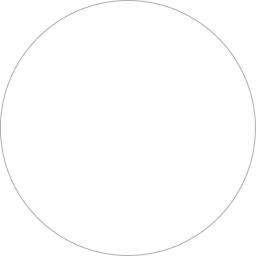
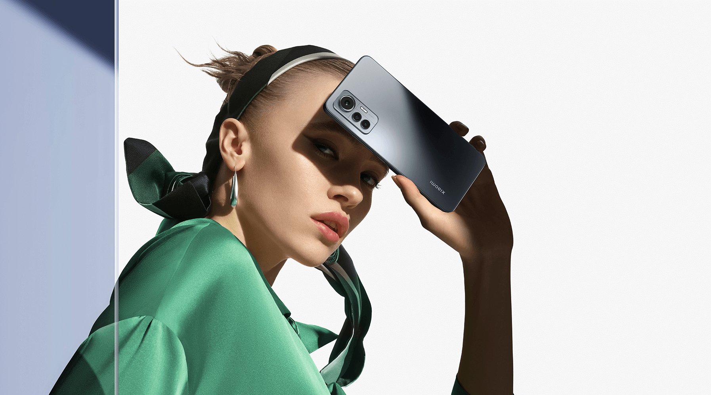

Se torne um ícone da moda
Uma obra-prima para os amantes da tecnologia e da moda. O novo Xiaomi 12 Lite chega com muita presença, estilo, espírito de independência e aspiração. O smartphone Xiaomi perfeito para se expressar e nunca parar de se inspirar.
Design sofisticado
Novo visual glamoroso
O novo design de laterais planas combinado com o esquema de cores com acabamento fosco fornece um visual premium, elegante e uma sensação agradável de segurar o smartphone.
Tons incomparáveis, com toque artístico
Cores gradiente de múltiplas camadas, Lite Pink, Lite Green e Black com efeito cetim para garantir o glamour de um dos smartphones mais bonitos do mercado.
Design slim, peso pena rouba a cena
Além de deslumbrante o Xiaomi 12 Lite é leve, ergonômico e perfeito para segurar por horas.
Peso
173g
Espessura
7,29mm
Câmera de estúdio
Fotos que definem você
Faça uma pose e se surpreenda com o resultado!
Câmera tripla de até 108MP
Descubra que há mais de uma maneira de registrar o mundo. A câmera grande angular de 108MP, câmera ultra grande angular e câmera macro são perfeitas para fotografar em qualquer cenário.

Sensor maior 1/1.52

Super Pixel 2.1μm 9-in-1
Câmera principal 108 MP
Captura cada movimento
Fotos em movimento com nitidez
108MP mode
Ultrarresolução para ver cada detalhe
Câmera ultra grande angular de 120°
Rastreamento de olhos
Torne suas fotos ainda mais deslumbrantes
Foco acompanha o seu olhar para maior nitidez
Câmera frontal de 32MP
A câmera frontal de alta resolução possui um sensor grande de 1/2,8'' com foco automático, para registrar o seu melhor ângulo com foco mais nítido e fotos ainda mais impressionantes.
Selfie de 32MP
Qualidade de imagem que realça sua beleza natural
Modo retrato
HDR automático no modo retrato
Retrato com tons de pele naturais e fundo desfocado como em câmeras profissionais.
O HDR automático equilibra a iluminação da cena e garante que seu retrato fique ótimo seja com pouca ou muita luz ambiente.

Experiência fascinante
Experiência cinematográfica
vívida e realista
Tela AMOLED FHD+ de 6,55" com cores mais vibrantes e contraste mais forte que reproduz as cores do mundo com fidelidade. As tecnologias HDR10+ e Dolby Vision® trazem qualidade de imagem de cinema combinadas com Dolby Atmos® e alto-falantes duplos para que você possa desfrutar da melhor experiência na palma da mão.
Mais de 68 bilhões
de cores
de cores
TrueColor
Navegue com muito mais fluidez
A tecnologia Xiaomi AdaptiveSync permite que a tela se adapte ao que você está navegando entre 60Hz e 120Hz, o que garante uma experiência de visualização mais agradável e preserva a vida útil da bateria. A taxa de amostragem de toque de 240Hz fornece uma resposta rápida a cada novo toque na tela.
Confortável aos olhos
Múltiplos modos que protegem continuamente seus olhos
e diminuem efetivamente a tensão e desgaste ocular.
Modo luz solar 3.0
Modo de leitura 3.0
True Display
Tela visível mesmo sob a luz solar
Experiência de leitura como em um papel
Cores se adaptam ao ambiente externo
Sensor de impressão digital na tela
Desbloqueie seu smartphone mais rápido e mais facilmente com um simples toque
Desempenho poderoso
Acompanhe todas as tendências com o rápido processador Snapdragon 778G 5G. Além disso, o Xiaomi 12 Lite possui elementos de grafite de alto desempenho que aumentam a capacidade de dissipação de calor em 7% em relação à geração anterior*, o que reduz a temperatura e garante o seu desempenho rápido.
*Os dados acima são comparados com o Xiaomi 11 Lite 5G NE. Os dados são dos Laboratórios Xiaomi.
Bateria feita para durar
e carregador turbo
18 horas
de vídeo*
121 horas
de música*

Bateria de alta capacidade com 4300mAh que combina com o design fino e leve do novo Xiaomi 12 Lite e carregador turbo de 67W que permite recarregar o telefone de 0 a 100% em apenas 41 minutos*
Xiaomi AdaptiveCharge
O Xiaomi AdaptiveCharge aprende com seu comportamento diário de recarga durante a noite através de algoritmos avançados para ajudar a proteger a vida útil da bateria a longo prazo. O carregamento fará uma pausa ao chegar em 80% de bateria enquanto você estiver dormindo e será totalmente carregado antes de você acordar.
Avisos Legais
*Imagens e vídeos nesta página são ilustrações e o design do produto real pode diferir.
*O 5G requer o suporte dos serviços de operadoras locais de telecomunicações e pode não estar disponível em todas as regiões.
*A acessibilidade de algumas características e funções pode variar entre as regiões. As imagens do produto e os recursos mostrados são apenas para referência, as imagens mostradas na tela de exibição são simuladas e apenas para fins de demonstração. Por favor, tome produtos reais como padrão.
*4300mAh refere-se ao valor típico da capacidade de bateria do Xiaomi 12 Lite.
*Todos os dados desta página sobre capacidade de dissipação de calor, carregamento e duração da bateria são obtidos nos laboratórios da Xiaomi. O desempenho real pode variar dependendo da versão do software, ambiente de teste específico e modelo de telefone. Todas as comparações mostradas nesta página referem-se apenas aos produtos Xiaomi.
*Todas as comparações feitas nesta página referem-se a smartphones Xiaomi; salvo indicação em contrário, todos os dados vêm de Laboratórios Xiaomi, parâmetros de design e tecnologia e dados fornecidos pelos fornecedores. Os dados de teste podem variar ligeiramente entre diferentes versões de teste e ambientes de teste. Todas as figuras mostradas nesta página do produto são apenas para referência e podem não refletir o produto real.